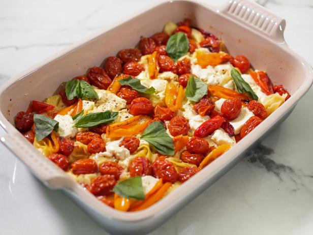

Feta and Tomato Pasta
Description
A gooey and tasty pasta recipe that will leave you hungry for more. This dish is disgustingly easy to make and incredibly yummy
The ingredients are simple, local, and you may already have some of them growing in your garden.
Ingredients
- Baby tomatos
- Block of feta cheese
- Pasta of your choosing
- Italian seasoning
- Olive oil
Instructions
- Put tomatos in the pan
- Add a block of feta in the middle
- Drizzle with olive oil
- Sprinkle italian seasoning over the top
- Bake at 400 for 30 minutes
- Cook pasta
- When tomatos are done, take them out and pour the pasta into the dish, mush the tomatos in and bon apetite.